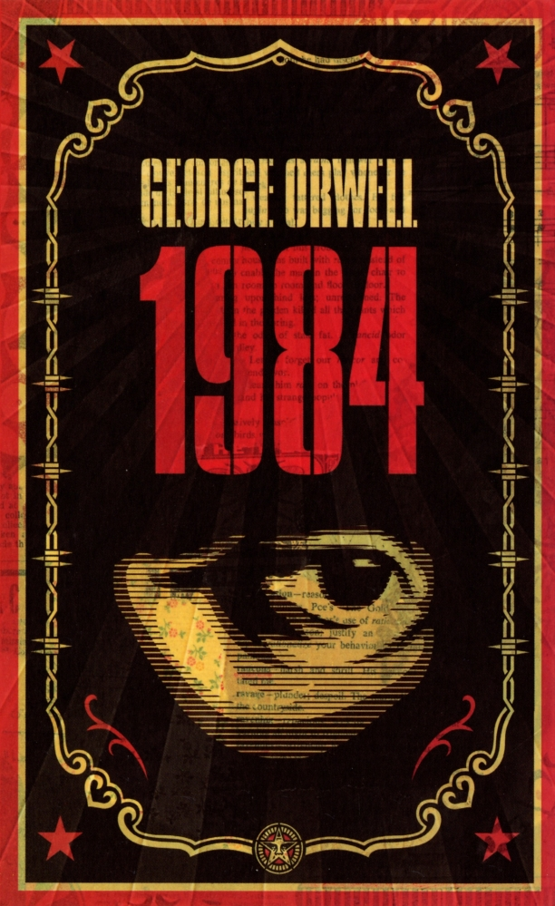
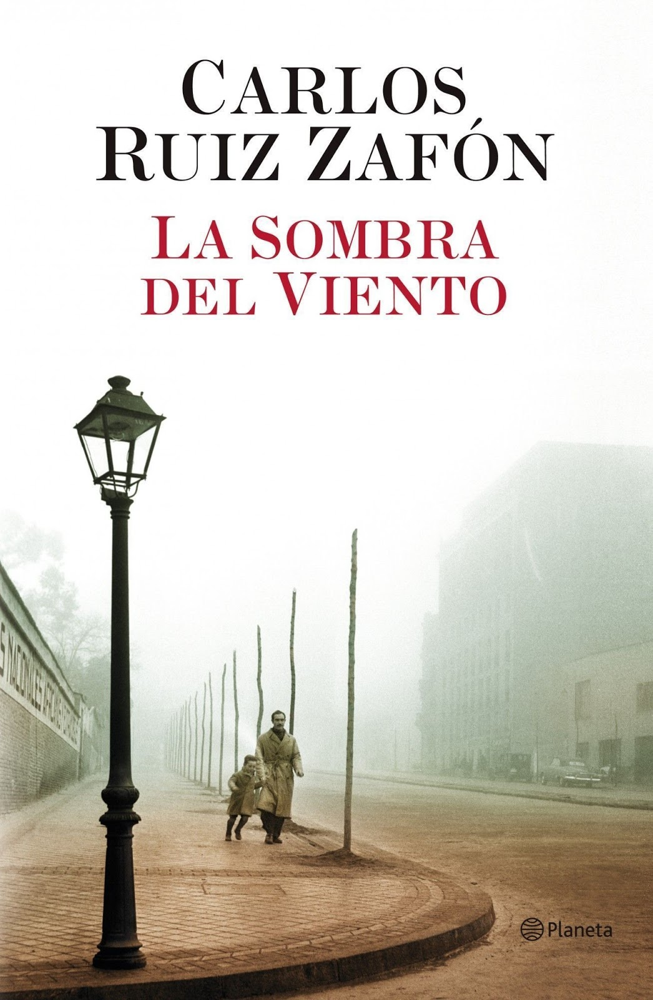

TÍTULO: CIEN AÑOS DE SOLEDAD
Autor: Gabriel García Márquez
Fecha de edición: 1967
Sinopsis: Esta obra maestra de la literatura latinoamericana narra la historia de la familia Buendía en el pueblo ficticio de Macondo. A través de generaciones, los Buendía enfrentan amores, tragedias y la inexorable repetición de la historia. García Márquez mezcla realismo mágico y elementos históricos para explorar temas como el tiempo, la soledad y la búsqueda de identidad.
Valoración personal: ★★★★★
Fecha de realización de la reseña: 1 de julio de 2024

TÍTULO: 1984
Autor: George Orwell
Fecha de edición: 1949
Sinopsis: "1984" es una novela distópica que describe un futuro sombrío donde el mundo está dominado por regímenes totalitarios. La historia sigue a Winston Smith, un empleado del Ministerio de la Verdad, quien comienza a cuestionar el opresivo sistema liderado por el Partido y su líder omnipresente, el Gran Hermano. La novela explora temas como la censura, la vigilancia masiva y la manipulación de la realidad.
Valoración personal: ★★★★☆
Fecha de realización de la reseña: 2 de julio de 2024

TÍTULO: La sombra del viento
Autor: Carlos Ruiz Zafón
Fecha de edición: 2001
Sinopsis: Ambientada en la Barcelona de la posguerra, "La sombra del viento" narra la historia de Daniel Sempere, un joven que descubre un misterioso libro en el Cementerio de los Libros Olvidados. A medida que investiga al autor, Julián Carax, Daniel se ve envuelto en una trama llena de secretos, pasiones y tragedias que cambiarán su vida para siempre.
Valoración personal: ★★★★☆
Fecha de realización de la reseña: 3 de julio de 2024